Large step-like movement episodes with final-position arrival <= 20 ms and magnitude >= 8.0 deg. This page is separate from the main report and is intended for ruling out suspicious points in the step-target arrival plot.
Watch the target_hold_after_s value and the optional next target marker. Many near-zero arrivals occur when the target changes again almost immediately, so the final target is not held long enough for a meaningful response measurement.
axis
episode_idx
magnitude_deg
arrival_latency_s
settling_time_s
target_hold_after_s
initial_target_deg
final_target_deg
pitch
2150
32.73
0.0003
0.0274
-1.730
31.00
pitch
2613
9.858
0.0004
0.0322
7.560
-2.298
pitch
2521
8.797
0.0005
0.0337
6.840
-1.957
pitch
2197
13.69
0.0007
0.0253
17.31
31.00
pitch
2146
32.43
0.0008
0.0304
-1.430
31.00
pitch
2305
26.13
0.0009
0.0243
4.870
31.00
yaw
2580
16.54
0.0006
0.0368
36.95
53.49
yaw
2085
20.97
0.0007
0.0453
36.03
57.00
yaw
2426
39.79
0.0008
0.0310
57.00
17.21
yaw
2420
31.12
0.0010
0.0302
47.94
16.82
yaw
2091
19.05
0.0011
0.0307
37.95
57.00
yaw
2079
21.58
0.0014
0.0483
35.42
57.00
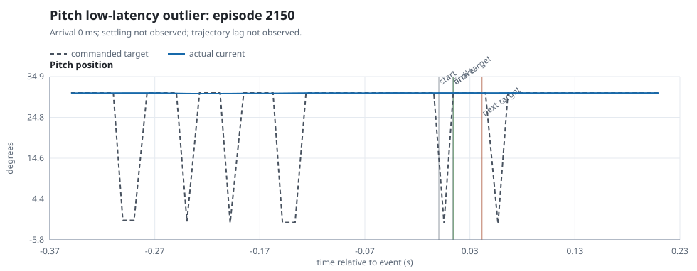
Pitch episode 2150: -1.73 deg to 31.00 deg (32.73 deg), arrival 0.3 ms, settling not observed, target held 27.4 ms after the final target update.
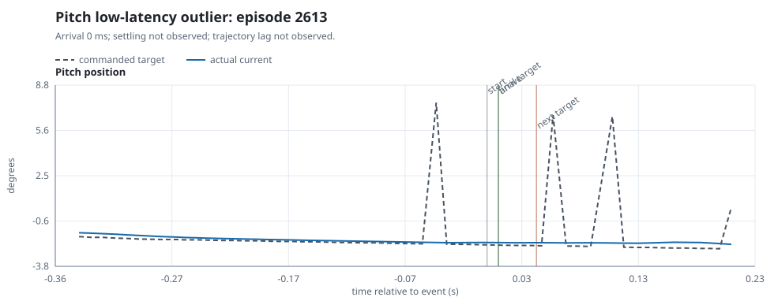
Pitch episode 2613: 7.56 deg to -2.30 deg (9.86 deg), arrival 0.4 ms, settling not observed, target held 32.2 ms after the final target update.
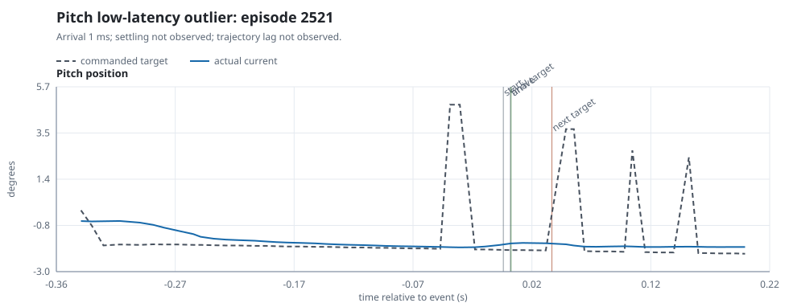
Pitch episode 2521: 6.84 deg to -1.96 deg (8.80 deg), arrival 0.5 ms, settling not observed, target held 33.7 ms after the final target update.
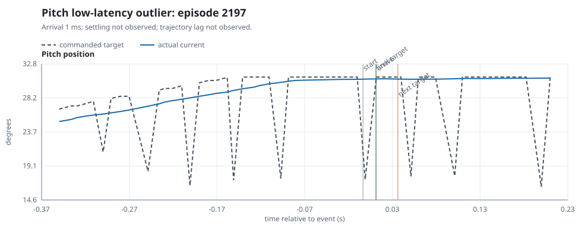
Pitch episode 2197: 17.31 deg to 31.00 deg (13.69 deg), arrival 0.7 ms, settling not observed, target held 25.3 ms after the final target update.
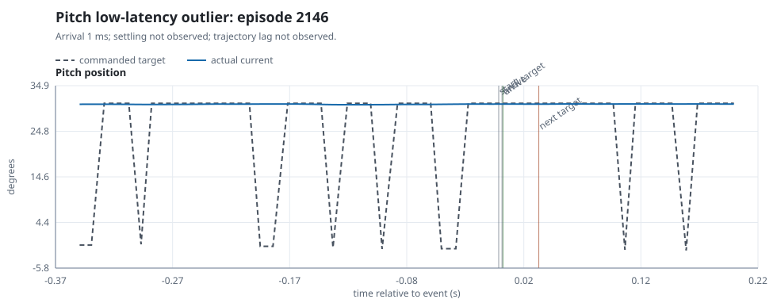
Pitch episode 2146: -1.43 deg to 31.00 deg (32.43 deg), arrival 0.8 ms, settling not observed, target held 30.4 ms after the final target update.
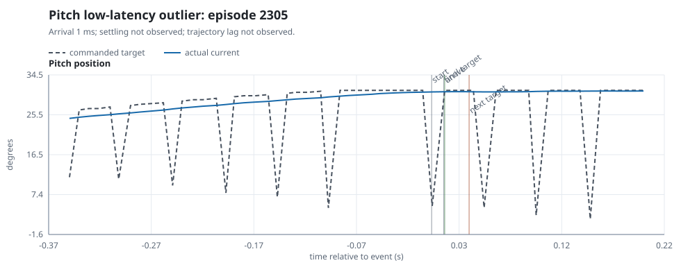
Pitch episode 2305: 4.87 deg to 31.00 deg (26.13 deg), arrival 0.9 ms, settling not observed, target held 24.3 ms after the final target update.
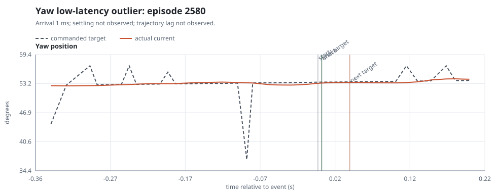
Yaw episode 2580: 36.95 deg to 53.49 deg (16.54 deg), arrival 0.6 ms, settling not observed, target held 36.8 ms after the final target update.
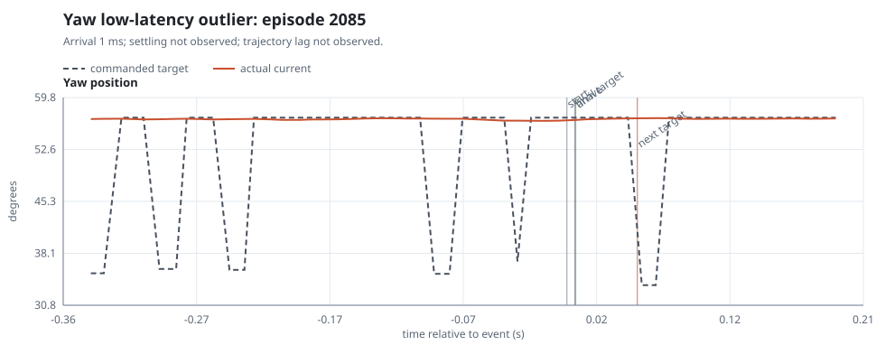
Yaw episode 2085: 36.03 deg to 57.00 deg (20.97 deg), arrival 0.7 ms, settling not observed, target held 45.3 ms after the final target update.
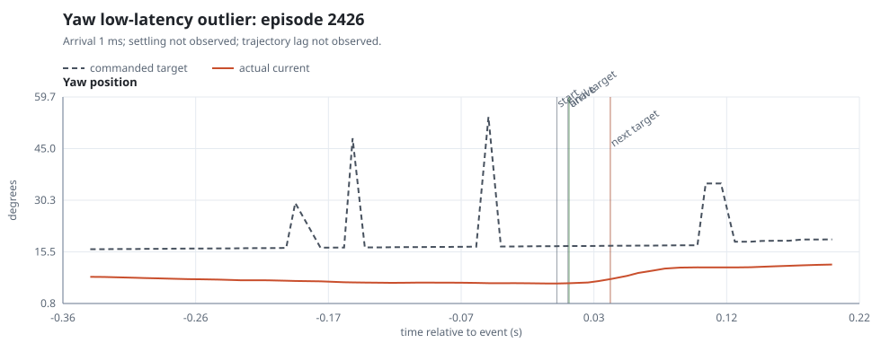
Yaw episode 2426: 57.00 deg to 17.21 deg (39.79 deg), arrival 0.8 ms, settling not observed, target held 31.0 ms after the final target update.
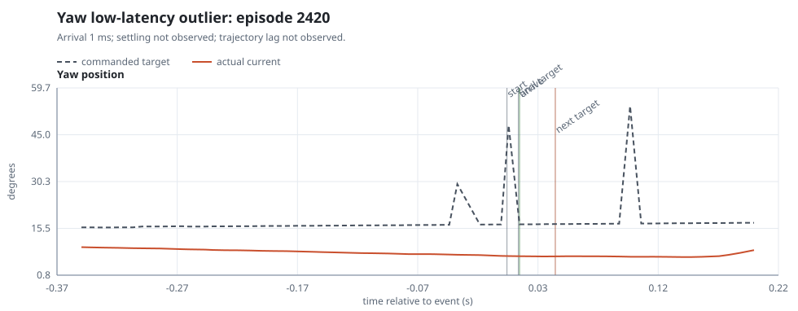
Yaw episode 2420: 47.94 deg to 16.82 deg (31.12 deg), arrival 1.0 ms, settling not observed, target held 30.2 ms after the final target update.
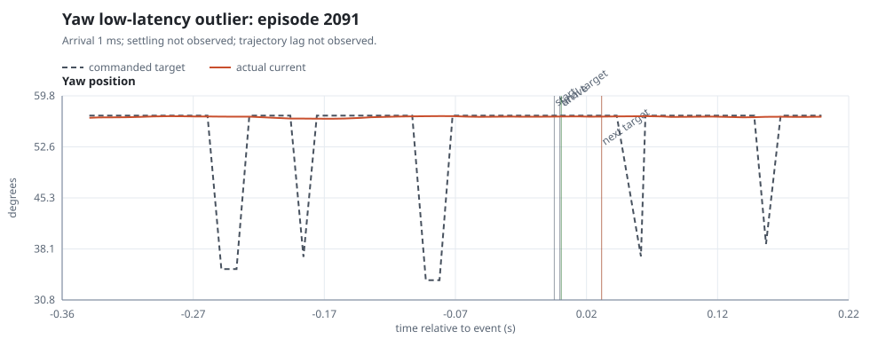
Yaw episode 2091: 37.95 deg to 57.00 deg (19.05 deg), arrival 1.1 ms, settling not observed, target held 30.7 ms after the final target update.
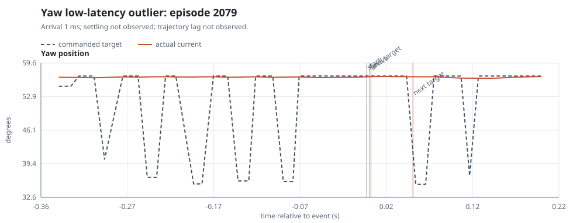
Yaw episode 2079: 35.42 deg to 57.00 deg (21.58 deg), arrival 1.4 ms, settling not observed, target held 48.3 ms after the final target update.